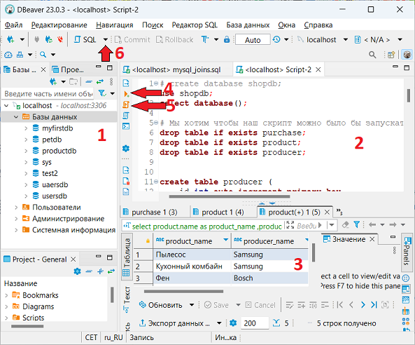

Базы данных
Базы данных
Базы данных
База данных — совокупность данных и методов доступа к ним. Подробнее см.
Википедию,
или здесь.
Интерактивный тренажер по SQL на stepik.
База данных по сути это просто хранилище неких сведений, не более того. Сами по себе базы данных не представляли бы интереса, если бы не было систем управления базами данных СУБД.
Система управления базами данных — это совокупность языковых и программных средств, которая осуществляет доступ к данным, позволяет их создавать, менять и удалять, обеспечивает безопасность данных и т.д.
В принципе, понятие базы данных можно определить следующим образом:
Important
База данных это совокупность данных и методов доступа к ним.
Существует огромное количество разновидностей баз данных, различающихся по различным критериям. Выделим наиболее распространенные:
Реляционными называются базы данных, в основе построения которых лежит реляционная модель. Данные в реляционных структурах организованы в виде набора таблиц, называемых отношениями, состоящих из столбцов и строк. Каждая строка таблицы представляет собой набор связанных значений, относящихся к одному объекту или сущности. Каждая строка в таблице может быть помечена уникальным идентификатором, называемым первичным ключом, а строки из нескольких таблиц могут быть связаны с помощью внешних ключей.
Особенности реляционных БД:
В реляционных базах данных структура записей строго определена и каждая запись содержит одни и те же поля. Даже если поле не используется, оно присутствует, хоть и пустое.
В реляционных базах данных информация хранится в связанных друг с другом таблицах. Сами же таблицы состоят из:
В каждой таблице каждый столбец имеет заранее определённый тип данных. Например, такими типами могу выступать:
VARCHAR (строковый тип данных)INTEGER (числовой тип данных)DATETIME (тип данных для даты и времени) и прочиеИ каждая строка таблицы должна иметь соответствующий тип для каждого столбца. СУБД не допустит
попытку добавления в поле с типом DATETIME произвольной строки.
Для того, чтобы узнать типы данных атрибутов можно выполнить SQL команду DESCRIBE и указать
название таблицы.
Любая СУБД имеет встроенную систему целостности и непротиворечивости данных. Эта система работает на наборе правил, определённых в схеме базы данных. Первичный ключ и внешние ключи как раз являются одними из таких правил.
Чтобы избегать неоднозначности при поиске в таблицах присутствуют первичный ключ или, как его ещё называют, "ключевое поле".
Ключевое поле (первичный ключ) – это поле (или набор полей), значение которого однозначно определяет запись в таблице.
Ключевым полем является id. С помощью данного правила СУБД не позволит нам создать новую запись,
где поле id будет неуникальным.
Внешний ключ – это поле (или набор полей) в одной таблице, которое ссылается на первичный ключ в другой таблице.
Таблица с внешним ключом называется дочерней таблицей, а таблица с первичным ключом называется ссылочной или родительской таблицей.
Правило внешнего ключа гарантирует, что при создании записей в дочерней таблице, значение поля, являющегося внешним ключом, есть в родительской таблице.
Key-value базы данных – это тип баз данных, которые хранят данные как совокупность пар "ключ-значение", в которых ключ служит уникальным идентификатором. То есть создаётся однозначное соответствие значения по ключу. Как ключи, так и значения могут представлять собой что угодно: от простых до сложных составных объектов.
Документоориентированные базы данных – это тип баз данных, направленный на хранение и запрос данных в виде документов, подобном JSON.
В отличие от других баз данных, документоориентированные оперируют «документами», сгруппированными по коллекциям. Документ представляет собой набор атрибутов (ключ и соответствующее ему значение). Значения могут быть как и простыми типами данных (строки, числа или даты), так и более сложными, такими как вложенные объекты, массивы и ссылки на другие документы.
В документоориентированных БД в отличии от реляционных БД, используется другой подход: в них отсутствует схема данных, что позволяет добавлять новую информацию в некоторые записи, не требуя при этом, чтобы все остальные записи в базе данных имели одинаковую структуру.
Документы в базе данных адресуются с помощью уникального ключа, обычно это строка, которая генерируется автоматически. По нему можно, например, извлекать запись или ссылаться на другие документы.
28 апреля 2023 г. загружена версия 8.0.33, файл mysql-8.0.33-winx64.zip
Страница загрузки: https://dev.mysql.com/downloads/mysql/
Установка и настройка в Windows
Существует также установщик в формате MSI, но в этом описании обсуждается только переносная (portable) установка.
Поместим каталог mysql-8.0.33-winx64 из архива mysql-8.0.33-winx64.zip в
каталог по выбору. Назовем каталог mysql-8.0.33-winx64 базовым каталогом.
Добавим путь к каталогу mysql-8.0.33-winx64\bin в переменную окружения PATH.
Чтобы проверить установку, в любом каталоге выполним следующее:
>mysql --version
mysql Ver 8.0.33 for Win64 on x86_64 (MySQL Community Server - GPL)
>mysqld --version
<base directory>\bin\mysqld.exe Ver 8.0.33 for Win64 on x86_64 (MySQL Community Server - GPL) В каталоге данных выполним следующую команду:
>mysqld --datadir=./data --initialize-insecureЧтобы @echo off
Чтобы запустить сервер с этой базой данных, в каталоге данных добавим следующий файл запуска
с именем startdb.bat:
@echo off
rem The following complicated construct is used to suppress "Terminate batch job (Y/N)"
rem confirmation.
rem https://superuser.com/a/715798
rem Note. It'll anyway output the prompt text but will not wait for the confirmation.
if [%JUSTTERMINATE%]==[Y] (
set JUSTTERMINATE=
mysqld.exe --console --datadir=./data
) else (
set JUSTTERMINATE=Y
call %0 %* <nul
)Чтобы запустить сервер запустим этот файл в каталоге данных:
>startdb.bat
2023-04-29T08:13:02.210744Z 0 [System] [MY-010116] [Server] <base directory>\bin\mysqld.exe (mysqld 8.0.33) starting as process 30436
2023-04-29T08:13:02.227299Z 1 [System] [MY-013576] [InnoDB] InnoDB initialization has started.
2023-04-29T08:13:02.460609Z 1 [System] [MY-013577] [InnoDB] InnoDB initialization has ended.
2023-04-29T08:13:02.655531Z 0 [Warning] [MY-010068] [Server] CA certificate ca.pem is self signed.
2023-04-29T08:13:02.655733Z 0 [System] [MY-013602] [Server] Channel mysql_main configured to support TLS. Encrypted connections are now supported for this channel.
2023-04-29T08:13:02.706253Z 0 [System] [MY-011323] [Server] X Plugin ready for connections. Bind-address: '::' port: 33060
2023-04-29T08:13:02.706397Z 0 [System] [MY-010931] [Server] <base directory>\bin\mysqld.exe: ready for connections. Version: '8.0.33' socket: '' port: 3306 MySQL Community Server - GPL.Чтобы остановить сервер, нажмем Ctrl+C.
Чтобы подключиться к этому серверу, в другом командном окне выполним следующую команду:
>mysql -u root -p
Enter password:
Welcome to the MySQL monitor. Commands end with ; or \g.
Your MySQL connection id is 9
Server version: 8.0.33
. . .
mysql> \q
Bye Здесь команда \q используется для выхода из клиента. Нужно снова подключиться для продолжения.
Ниже приведены простые шаги для того, чтобы сделать базу данных пригодной для использования. Создание базы данных:
mysql> create database testdb;
Query OK, 1 row affected (0.00 sec)
mysql> show databases;
+--------------------+
| Database |
+--------------------+
| information_schema |
| mysql |
| performance_schema |
| sys |
| testdb |
+--------------------+
5 rows in set (0.00 sec)Note
В обучающем курсе преподаватель не создает нового пользователя, а работает под учетной записью
суперпользователя (root).
Создание пользователя и предоставление ему всех привилегий во вновь созданной базе данных:
CREATE USER 'testuser'@'localhost' IDENTIFIED BY 'testuser';
GRANT ALL PRIVILEGES ON testuser.* TO 'testuser'@'localhost';Теперь можно подключиться к БД под именем нового пользователя:
>mysql -u testuser -p
Enter password: ********
...
mysql>При рассмотрении установки сервера БД использовалась клиентская программа mysql для подключения к
БД и выполнения операций в ней. Этот клиент поставляется вместе с сервером и работает в командной
строке. Более удобный клиент для БД MySql с графическим пользовательским интерфейсом может быть
установлен при использовании исполнимого установщика.
Поскольку мы использовали переносную (портабельную) установку, то данный клиент установлен не был. Вместо него можно использовать другие стандартные клиентские программы, например DBeaver Community. Программа может быть установлена портабельно, т.е. с помощью простой распаковки архива.

1 — область подключений, где создаются новые БД и подключения к готовым БД. 2 — область написания и исполнения запросов. 3 — область результатов запросов. 4 — выполнить запрос под курсором. 5 — выполнить весь сценарий. 6 — открыть новое окно сценария.
SQL (Structured Query Language)— это язык структурированных запросов, использующийся для работы с базой данных: извлечения, обновления, добавления и удаления информации из нее.
В соответствии с данным ранее определением БД язык SQL относится к методам доступа к данным. Он включает в себя 4 основные оператора, которые соответствуют 4 основным операциям с данными:
SELECT — получение (извлечение) данных;INSERT — добавление (создание) данных;UPDATE — обновление (изменение) данных;DELETE — удаление данных.Структура запроса:
SELECT 'столбцы или * для выбора всех столбцов; обязательно'
FROM 'таблица; обязательно'
WHERE 'условие/фильтрация, например, city = 'Moscow'; необязательно'
GROUP BY 'столбец, по которому хотим сгруппировать данные; необязательно'
HAVING 'условие/фильтрация на уровне сгруппированных данных; необязательно'
ORDER BY 'столбец, по которому хотим отсортировать вывод; необязательно'Одна из основных функций SQL — это получение выборок данных из СУБД. Для этого в SQL используется оператор SELECT. Давайте рассмотрим несколько простых запросов с его участием.
Вывод произвольных значений Для начала важно понимать, что через оператор SELECT можно выводить данные не только из таблиц базы данных, но и произвольные строки, числа, даты и т.д.
Вывод всех данных из таблицы
Для вывода всех полей из определённой таблицы используется символ *:
select * from pet;Вывод данных из определённых колонок таблицы Если необходимо вывести информацию только по определённым столбцам таблицы, а не всю сразу, то это можно сделать перечисляя названия столбцов через запятую:
select product_name, price from products;Псевдонимы
В случае, если мы хотим вывести какие-то столбцы таблицы, но чтобы в итоговой выборке они были
названы иначе, мы можем использовать псевдонимы (их также называют алиасами).
Их синтаксис достаточно простой, мы должны использовать оператор AS:
select product_name Название, price * product_count AS Стоимость from products;Или же можно обойтись и без AS, просто написав желаемое наименование поля через пробел.
Псевдонимы могут содержать до 255 знаков (включая пробелы, цифры и специальные символы).
Условный оператор WHERE
Ситуация, когда требуется сделать выборку по определённому условию, встречается очень часто.
Для этого в операторе SELECT существует оператор WHERE, после которого следуют условия для
ограничения строк. Если запись удовлетворяет этому условию, то попадает в результат, иначе
отбрасывается.
select name from pet_owner WHERE id = 1;BETWEEN
Оператор BETWEEN min AND max позволяет узнать расположено ли проверяемое значение
столбца в интервале между min и max, включая сами значения min и max.
select * from Payments
WHERE unit_price BETWEEN 100 AND 500;Многотабличные запросы, JOIN.
В начале описывалась работа только с одной таблицей базы данных. В реальности же очень часто приходится делать выборку из нескольких таблиц, каким-то образом объединяя их. Есть основные способы соединения таблиц. По структуре, соединение бывает:
INNER (по умолчанию)OUTER, при этом внешнее соединение делится на левое LEFT, правое RIGHT и полное FULL.Внутреннее соединение — соединение, при котором находятся пары записей из двух таблиц, удовлетворяющие условию соединения, тем самым образуя новую таблицу, содержащую поля из первой и второй исходных таблиц.
select o.name as owner_name
,p.name as pet_name
from pet_owner o
INNER JOIN pet p on p.owner_id = o.id and p.species = 'кошка';Внешнее соединение может быть трёх типов:
LEFT, RIGHT,FULL. По умолчанию оно является полным.Главным отличием внешнего соединения от внутреннего является то, что оно обязательно возвращает
все строки одной LEFT, RIGHT или двух таблиц FULL.
Внешнее левое соединение LEFT JOIN
Соединение, которое возвращает все значения из левой таблицы, соединённые с соответствующими
значениями из правой таблицы, если они удовлетворяют условию соединения, или заменяет их на NULL
в обратном случае.
select o.name as owner_name
,p.name as pet_name
from pet_owner o
left join pet p on p.owner_id = o.id and p.species = 'кошка';Внешнее правое соединение RIGHT JOIN
Соединение, которое возвращает все значения из правой таблицы, соединённые с соответствующими
значениями из левой таблицы, если они удовлетворяют условию соединения, или заменяет их на NULL
в обратном случае.
select p.name as pet_name
,o.name as owner_name
from pet_owner o
right join pet p on p.owner_id = o.id and p.species = 'кошка';Внешнее полное соединение FULL OUTER JOIN
Соединение, которое выполняет внутреннее соединение записей и дополняет их левым внешним соединением и правым внешним соединением.
Алгоритм работы полного соединения:
INNER JOINLEFT JOINRIGHT JOINselect o.name as owner_name
,p.species
,p.name as pet_name
from pet_owner o
left join pet p on p.owner_id = o.id
UNION all # оператор объединения
select o.name
,p.species
,p.name
from pet_owner o
right join pet p on p.owner_id = o.id
where p.owner_id is null;Еще один комплексный пример
Подробно смотри здесь
product_name |producer_name|amount|price |cost |
----------------+-------------+------+--------+---------+
Пылесос |Samsung | 2|89120.00|178240.00|
Кухонный комбайн|Samsung | 4| 5350.00| 21400.00|
Фен |Bosch | 2| 1230.00| 2460.00|
Кофеварка |Samsung | 1| 999.00| 999.00|
Видеокарта |HP | 3| 480.00| 1440.00|Группировка в запросах
Имеем такую таблицу:
CREATE TABLE piople(
name VARCHAR(50),
categori VARCHAR(30)
);
INSERT INTO piople (name, categori)
VALUES ('Маша', 'ребенок'),
('Саша', 'подросток'),
('Петя', 'взрослый'),
('Вова', 'ребенок'),
('Маша', 'подросток'),
('Аня', 'взрослый'),
('Сава', 'ребенок'),
('Миша', 'взрослый'),
('Гена', 'подросток'),
('Рома', 'ребенок'),
('Кема', 'взрослый');Требуется посчитать количество человек каждой категории.
SELECT categori, count(1) FROM piople
GROUP by categori;categori |count(1)|
---------+--------+
ребенок | 4|
подросток| 3|
взрослый | 4|Предположим что у нас есть таблица
CREATE TABLE author (
id INT PRIMARY KEY AUTO_INCREMENT,
first_name VARCHAR(50),
last_name VARCHAR(50),
age INT
);Добавим в нее одну запись:
INSERT INTO author (first_name, last_name, age)
VALUES ('Михаил', 'Булгаков', 67)
;Здесь мы указываем таблицу, в которую нужно добавить данные, далее в скобках перечисляем те поля
таблицы, для которых собираемся определить значения. В данном случае мы не собираемся определять
значение для поля id. Далее после ключевого слова VALUES в скобках перечисляем значения в
соответствующем порядке.
Проверим результат:
SELECT * FROM author;
id|first_name|last_name |age|
--+----------+-----------+---+
1|Михаил |Булгаков | 67|БД MySQL позволяет добавлять несколько строк в одном операторе:
INSERT into author (first_name, last_name, age)
VALUES ('Федор', 'Достоевский', 79),
('Сергей', 'Есенин', 40)
;В результате получим:
SELECT * FROM author;
id|first_name|last_name |age|
--+----------+-----------+---+
1|Михаил |Булгаков | 67|
2|Федор |Достоевский| 79|
3|Сергей |Есенин | 40|Перечисление полей можно опустить. В этом случае требуется определить значения для всех полей таблицы в соответствующем порядке:
INSERT INTO author
VALUES (default, 'Александр', 'Пушкин', default)
;Поскольку здесь мы решили не определять значения для полей id и age, то нам необходимо в соответствующих позициях указать ключевое слово default, т.е. значение по умолчанию. Проверим:
SELECT * FROM author;
id|first_name|last_name |age|
--+----------+-----------+---+
1|Михаил |Булгаков | 67|
2|Федор |Достоевский| 79|
3|Сергей |Есенин | 40|
4|Александр |Пушкин | |Хотя синтаксис языка допускает такой вариант добавления в таблицу, но однако он является нежелателен.
Основная причина: последовательность значений указывается в операторе INSERT, а последовательность
колонок определяется структурой таблицы. Вполне возможна такая ситуация когда в различных экземплярах
приложения (боевом, тестовом, разработческом) таблица имеет одинаковый набор колонок, но в
разном порядке и это вызовет ошибку.
UPDATE author
SET age = 35,
first_name = 'А'
WHERE id = 4
;Здесь указывается имя таблицы, строки которой мы обновляем. Далее, после ключевого слова SET,
перечисляются имена колонок и новые значения в них. Далее определяется набор строк, которые требуется
обновить (правила те же самые, что и в операторе SELECT).
Проверка результата:
SELECT * FROM author WHERE id = 4;
id|first_name|last_name|age|
--+----------+---------+---+
4|А |Пушкин | 35|Danger
Важно помнить, что если не указать условия выбора строк, то обновление произойдет во всех строках таблицы. Такой вариант вполне может соответствовать тех. заданию, однако очень часто является ошибкой по невнимательности, ведущей к потере данных, которые потом очень сложно восстановить.
DELETE FROM author WHERE age > 60;Смысл данного оператора можно понять с точки зрения естественного (английского) языка. В данном
случае мы удаляем строки, которые имеют в поле age значение больше 60.
В нашем случае удалится две записи, следовательно останется еще две:
SELECT * FROM author;
id|first_name|last_name|age|
--+----------+---------+---+
3|Сергей |Есенин | 40|
4|А |Пушкин | 35|Danger
Если условие WHERE не указать, то удалятся все строки таблицы. Очень важно всегда обращать на
это внимание!